①、连接成功后，右键“用户”、“模式”或用户名弹出菜单，如图（分别表示右键“用户”、“模式”、用户名时选择数据对象页面）：
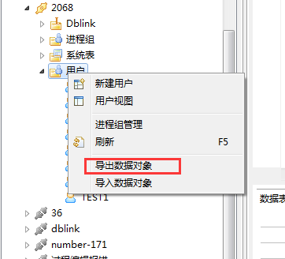
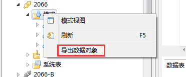
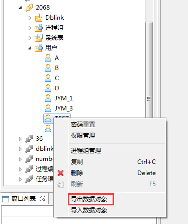
②、单击导出数据对象，填写文件名和路径，点击下一步，如图：
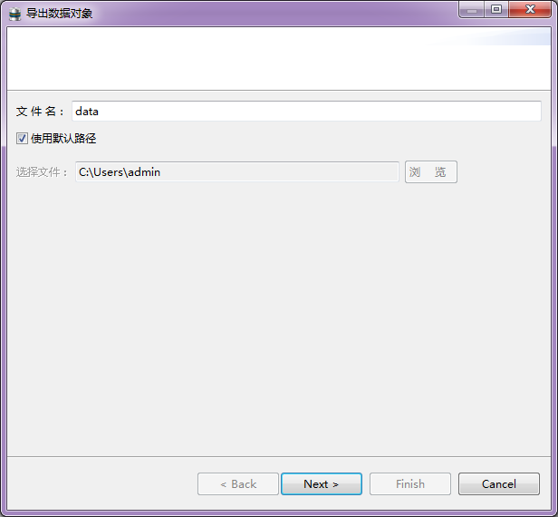
③、选择要导出的数据对象，点击确定导出数据对象到文件。如图（分别表示右键“用户”/“模式”、用户名时选择数据对象页面）：
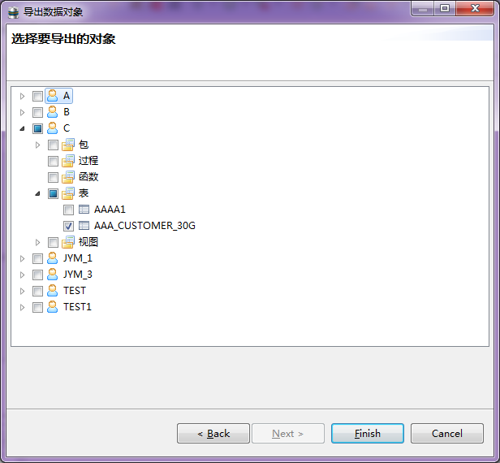
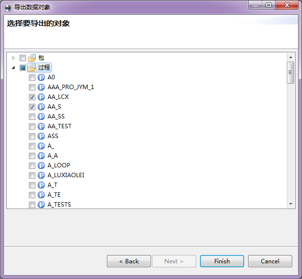
④、导出完成后，弹出导出成功提示框，点击确定完成导出，如图：
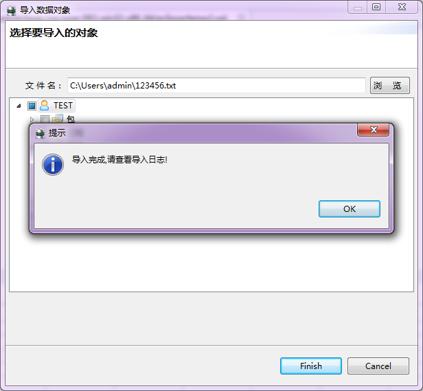
①、连接成功后，右键“用户”、用户名节点弹出菜单。如图
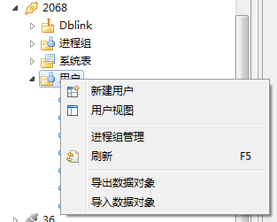
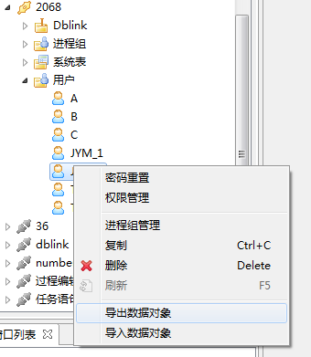
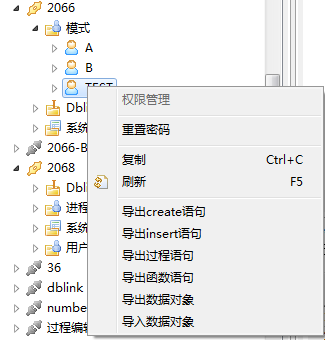
②、单击导入数据对象，选择要导入的数据文件，会显示数据文件中包含的数据对象。若为右键“用户”节点，会有创建用户选择框，用于创建数据对象文件中当前数据下不存在的用户；若为右键用户名节点，则将数据对象文件中个用户下的数据对象导入到本用户中，system用户只能导入表和视图，普通用户可以向本用户导入所有类型的数据对象，只能想其他用户导入表和视图。如图（分别表示右键“用户”、用户名时选择数据对象页面）：
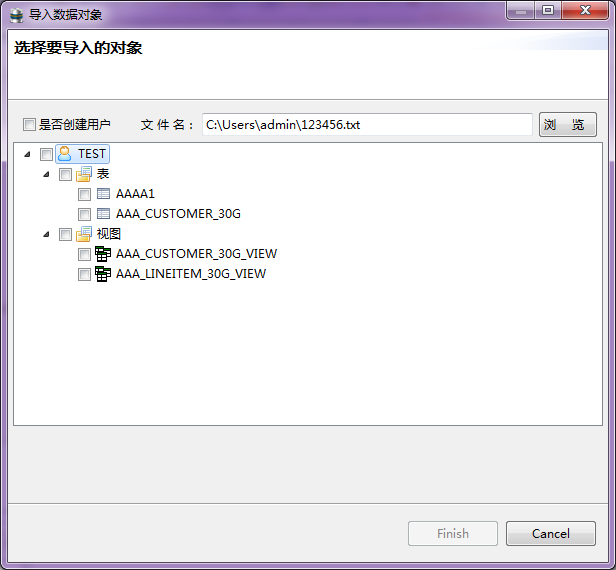
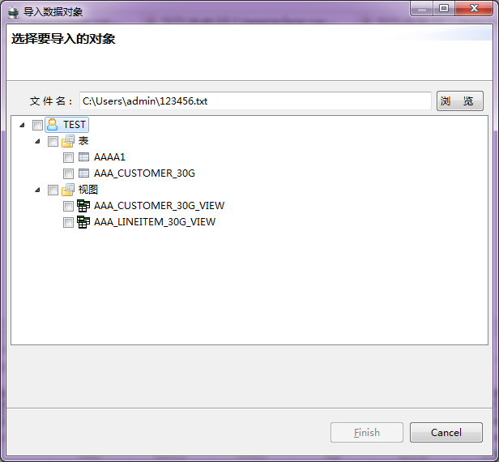
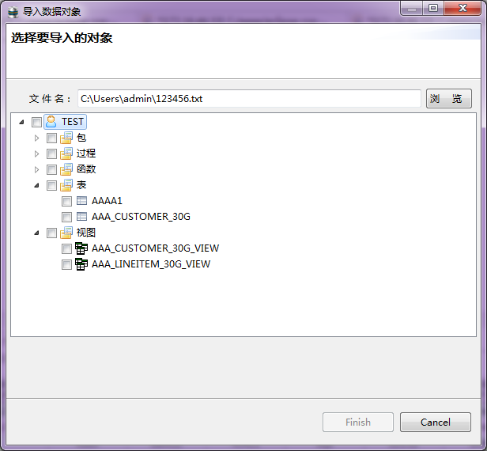
③、选择要导出的用户下的数据对象，点击确定导入数据对象。导入完成后弹出导入完成提示框，可到安装目录下的log/import.log文件中查看导入日志。如图：
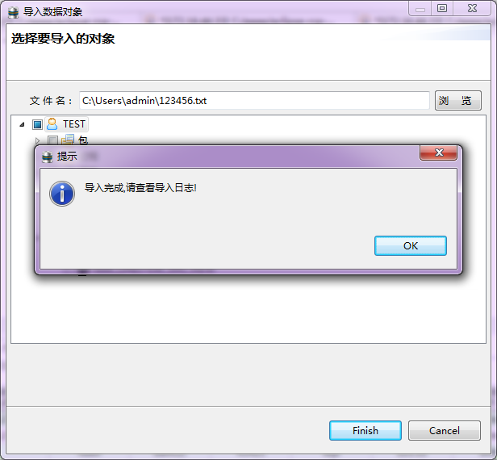